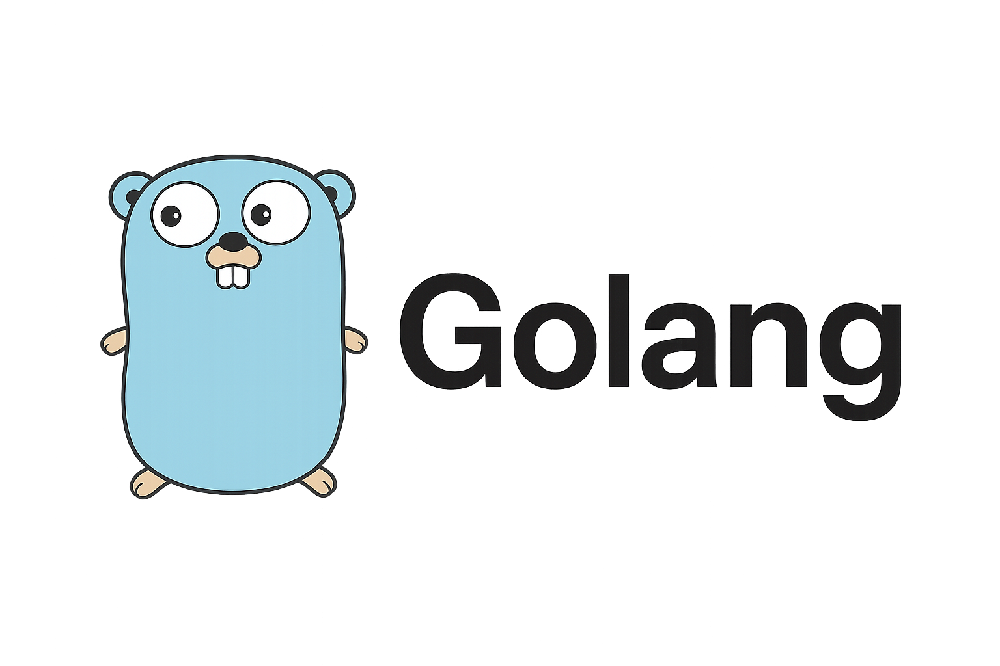
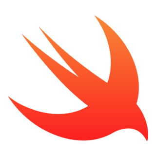

Go
Combina la eficiencia y rendimiento de lenguajes como C con la simplicidad y productividad de lenguajes modernos
La posición en el ranking de stack overflow es 11
JAVA
Java es un lenguaje de programación ampliamante utilizado para codificar aplicaciones web.
La posición en el ranking de stack overflow es 8
C++
La intención de su creación fue extender el lenguaje de programación C y añadir mecanismos que permiten la manipulación de objetos.
La posición en el ranking de stack overflow es 10

JAVA SCRIPT
JavaScript es una de las tecnologías fundamentales de la WWW, junto con HTML y CSS
La posición en el ranking de stack overflow es 1

Swift
Es un lenguaje multiparadigma (orientado a objetos, funcional, genérico) creado para desarrolar software en plataforma Apple: iOS, macOS, tvOS, watchOS, e inluso visionOS
La posición en el ranking de stack overflow es 16
TYPESCRIPT
TypeScript es un lenguaje de programación de código abierto, lanzando en 2012 por Microsoft. Esta diseñado para desarrolar aplicaciones en el lado del cliente y del servidor.
La posición en el ranking de stack overflow es 6